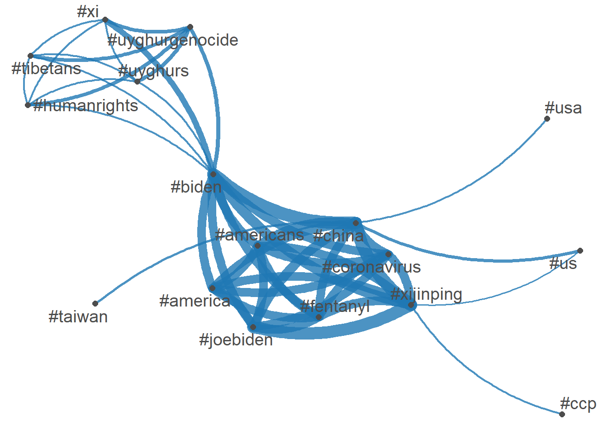
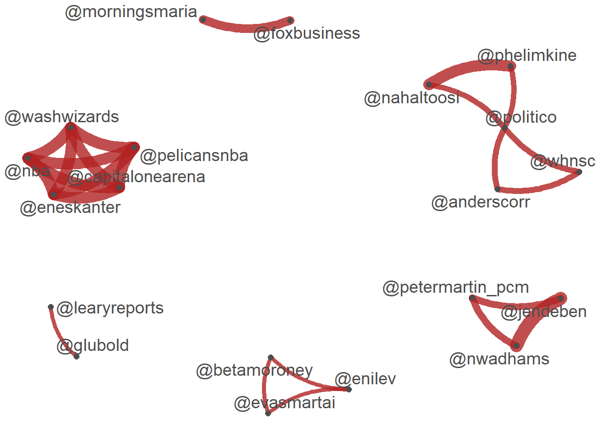
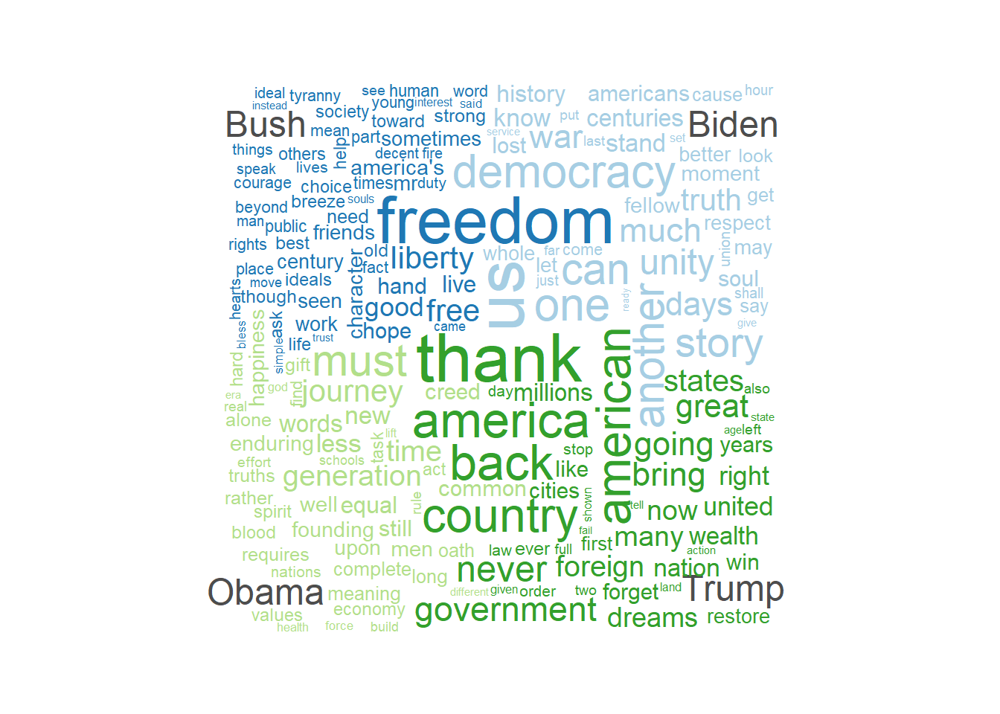
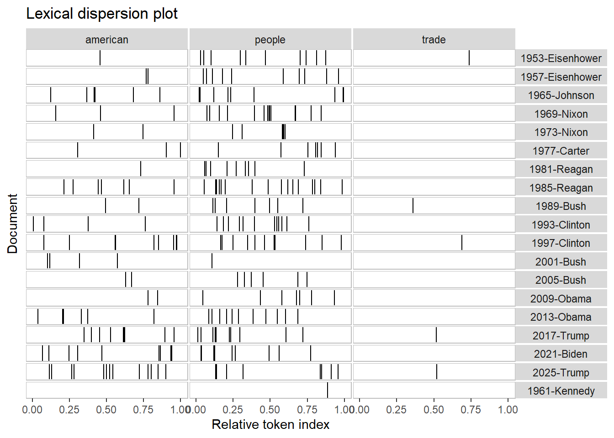

Show R Code
install.packages(c("quanteda","quanteda.textmodels","quanteda.textstats","quanteda.textplots"))The following package(s) will be installed:
- quanteda [4.2.0]
- quanteda.textmodels [0.9.10]
- quanteda.textplots [0.95]
- quanteda.textstats [0.97.2]
These packages will be installed into "~/Grad School/nihay17.github.io/renv/library/windows/R-4.4/x86_64-w64-mingw32".
# Installing packages --------------------------------------------------------
- Installing quanteda ... OK [linked from cache]
- Installing quanteda.textmodels ... OK [linked from cache]
- Installing quanteda.textstats ... OK [linked from cache]
- Installing quanteda.textplots ... OK [linked from cache]
Successfully installed 4 packages in 73 milliseconds.Show R Code
library(quanteda)Package version: 4.2.0
Unicode version: 15.1
ICU version: 74.1Parallel computing: 8 of 8 threads used.See https://quanteda.io for tutorials and examples.Show R Code
library(quanteda.textmodels)
library(quanteda.textplots)
library(readr)
library(ggplot2)
# Twitter data about President Biden and Xi summit in Novemeber 2021
# Do some background search/study on the event
#
summit <- read_csv("https://raw.githubusercontent.com/datageneration/datamethods/master/textanalytics/summit_11162021.csv")Rows: 14520 Columns: 90── Column specification ────────────────────────────────────────────────────────
Delimiter: ","
chr (50): screen_name, text, source, reply_to_screen_name, hashtags, symbol...
dbl (26): user_id, status_id, display_text_width, reply_to_status_id, reply...
lgl (10): is_quote, is_retweet, quote_count, reply_count, ext_media_type, q...
dttm (4): created_at, quoted_created_at, retweet_created_at, account_create...
ℹ Use `spec()` to retrieve the full column specification for this data.
ℹ Specify the column types or set `show_col_types = FALSE` to quiet this message.Show R Code
head(summit)# A tibble: 6 × 90
user_id status_id created_at screen_name text source
<dbl> <dbl> <dttm> <chr> <chr> <chr>
1 1.38e18 1.46e18 2021-11-16 20:10:23 DSJ78992721 "Breaking News: U… Twitt…
2 2.60e 8 1.46e18 2021-11-16 20:10:17 bradhooperarch "https://t.co/rKR… Twitt…
3 3.00e 9 1.46e18 2021-11-16 20:10:10 scarecrow1113 "[Recap] Biden ur… Twitt…
4 3.00e 9 1.46e18 2021-11-15 19:24:04 scarecrow1113 "U.S. President J… Twitt…
5 1.36e18 1.46e18 2021-11-16 06:22:29 Internl_Leaks "#BREAKING Biden … Twitt…
6 1.36e18 1.46e18 2021-11-16 20:09:36 Internl_Leaks "#BREAKING Biden … Twitt…
# ℹ 84 more variables: display_text_width <dbl>, reply_to_status_id <dbl>,
# reply_to_user_id <dbl>, reply_to_screen_name <chr>, is_quote <lgl>,
# is_retweet <lgl>, favorite_count <dbl>, retweet_count <dbl>,
# quote_count <lgl>, reply_count <lgl>, hashtags <chr>, symbols <chr>,
# urls_url <chr>, urls_t.co <chr>, urls_expanded_url <chr>, media_url <chr>,
# media_t.co <chr>, media_expanded_url <chr>, media_type <chr>,
# ext_media_url <chr>, ext_media_t.co <chr>, ext_media_expanded_url <chr>, …Show R Code
sum_twt = summit$text
toks = tokens(sum_twt)
sumtwtdfm <- dfm(toks)
# Latent Semantic Analysis
sum_lsa <- textmodel_lsa(sumtwtdfm)
summary(sum_lsa) Length Class Mode
sk 10 -none- numeric
docs 145200 -none- numeric
features 159930 -none- numeric
matrix_low_rank 232218360 -none- numeric
data 232218360 dgCMatrix S4 Show R Code
tweet_dfm <- tokens(sum_twt, remove_punct = TRUE) %>%
dfm()
head(tweet_dfm)Document-feature matrix of: 6 documents, 15,927 features (99.89% sparse) and 0 docvars.
features
docs breaking news us president biden amp communist china leader xi
text1 1 1 1 1 1 1 1 2 1 1
text2 0 0 0 0 0 0 0 0 0 0
text3 0 0 0 0 1 0 0 0 0 1
text4 0 0 0 1 1 0 0 0 0 1
text5 0 0 0 0 1 0 0 0 0 1
text6 0 0 0 0 1 0 0 0 0 1
[ reached max_nfeat ... 15,917 more features ]Show R Code
tag_dfm <- dfm_select(tweet_dfm, pattern = "#*")
toptag <- names(topfeatures(tag_dfm, 50))
head(toptag, 10) [1] "#china" "#biden" "#xijinping" "#joebiden" "#america"
[6] "#americans" "#coronavirus" "#fentanyl" "#xi" "#us" Show R Code
library("quanteda.textplots")
# Network plot: tags
tag_fcm <- fcm(tag_dfm)
head(tag_fcm)Feature co-occurrence matrix of: 6 by 665 features.
features
features #breaking #breakingnews #biden #china #usa #pray4america
#breaking 0 4 5 5 5 0
#breakingnews 0 0 4 5 4 0
#biden 0 0 0 443 49 0
#china 0 0 0 8 76 0
#usa 0 0 0 0 6 0
#pray4america 0 0 0 0 0 0
features
features #joebiden #xijinping #america #americans
#breaking 0 0 0 0
#breakingnews 0 0 0 0
#biden 299 370 302 295
#china 339 434 308 295
#usa 12 15 0 0
#pray4america 0 0 0 0
[ reached max_nfeat ... 655 more features ]Show R Code
topgat_fcm <- fcm_select(tag_fcm, pattern = toptag)
textplot_network(topgat_fcm, min_freq = 50, edge_alpha = 0.8, edge_size = 5)
Show R Code
# Network plot: Users
user_dfm <- dfm_select(tweet_dfm, pattern = "@*")
topuser <- names(topfeatures(user_dfm, 50))
head(topuser, 20) [1] "@potus" "@politico" "@joebiden" "@jendeben"
[5] "@eneskanter" "@nwadhams" "@phelimkine" "@nahaltoosi"
[9] "@nba" "@washwizards" "@pelicansnba" "@capitalonearena"
[13] "@kevinliptakcnn" "@foxbusiness" "@morningsmaria" "@scmpnews"
[17] "@petermartin_pcm" "@nytimes" "@uyghur_american" "@kaylatausche" Show R Code
user_fcm <- fcm(user_dfm)
head(user_fcm, 20)Feature co-occurrence matrix of: 20 by 711 features.
features
features @youtube @bfmtv @cnn @lauhaim @barackobama @joebiden
@youtube 0 0 0 0 0 0
@bfmtv 0 0 1 1 1 1
@cnn 0 0 0 1 1 1
@lauhaim 0 0 0 0 1 1
@barackobama 0 0 0 0 0 1
@joebiden 0 0 0 0 0 3
@kamalaharris 0 0 0 0 0 0
@hillaryclinton 0 0 0 0 0 0
@billclinton 0 0 0 0 0 0
@cbsnews 0 0 0 0 0 0
features
features @kamalaharris @hillaryclinton @billclinton @cbsnews
@youtube 0 0 0 0
@bfmtv 1 1 1 1
@cnn 1 1 1 1
@lauhaim 1 1 1 1
@barackobama 1 1 1 1
@joebiden 1 1 1 1
@kamalaharris 0 1 1 1
@hillaryclinton 0 0 1 1
@billclinton 0 0 0 1
@cbsnews 0 0 0 0
[ reached max_feat ... 10 more features, reached max_nfeat ... 701 more features ]Show R Code
user_fcm <- fcm_select(user_fcm, pattern = topuser)
textplot_network(user_fcm, min_freq = 20, edge_color = "firebrick", edge_alpha = 0.8, edge_size = 5)
Show R Code
# Wordcloud
# based on US presidential inaugural address texts, and metadata (for the corpus), from 1789 to present.
dfm_inaug <- corpus_subset(data_corpus_inaugural, Year <= 1826) %>%
tokens(remove_punct = TRUE) %>%
tokens_remove(stopwords("english")) %>%
dfm() %>%
dfm_trim(min_termfreq = 10, verbose = FALSE)
set.seed(100)
textplot_wordcloud(dfm_inaug)
Show R Code
corpus_subset(data_corpus_inaugural,
President %in% c("Biden","Trump", "Obama", "Bush")) %>%
tokens(remove_punct = TRUE) %>%
tokens_remove(stopwords("english")) %>%
dfm() %>%
dfm_group(groups = President) %>%
dfm_trim(min_termfreq = 5, verbose = FALSE) %>%
textplot_wordcloud(comparison = TRUE)Warning in wordcloud_comparison(x, min_size, max_size, min_count, max_words, :
jobs could not be fit on page. It will not be plotted.Warning in wordcloud_comparison(x, min_size, max_size, min_count, max_words, :
borders could not be fit on page. It will not be plotted.Warning in wordcloud_comparison(x, min_size, max_size, min_count, max_words, :
president could not be fit on page. It will not be plotted.Warning in wordcloud_comparison(x, min_size, max_size, min_count, max_words, :
nations could not be fit on page. It will not be plotted.Warning in wordcloud_comparison(x, min_size, max_size, min_count, max_words, :
workers could not be fit on page. It will not be plotted.Warning in wordcloud_comparison(x, min_size, max_size, min_count, max_words, :
together could not be fit on page. It will not be plotted.Warning in wordcloud_comparison(x, min_size, max_size, min_count, max_words, :
success could not be fit on page. It will not be plotted.Warning in wordcloud_comparison(x, min_size, max_size, min_count, max_words, :
thank could not be fit on page. It will not be plotted.Warning in wordcloud_comparison(x, min_size, max_size, min_count, max_words, :
power could not be fit on page. It will not be plotted.Warning in wordcloud_comparison(x, min_size, max_size, min_count, max_words, :
united could not be fit on page. It will not be plotted.Warning in wordcloud_comparison(x, min_size, max_size, min_count, max_words, :
follow could not be fit on page. It will not be plotted.Warning in wordcloud_comparison(x, min_size, max_size, min_count, max_words, :
longer could not be fit on page. It will not be plotted.Warning in wordcloud_comparison(x, min_size, max_size, min_count, max_words, :
done could not be fit on page. It will not be plotted.Warning in wordcloud_comparison(x, min_size, max_size, min_count, max_words, :
land could not be fit on page. It will not be plotted.Warning in wordcloud_comparison(x, min_size, max_size, min_count, max_words, :
government could not be fit on page. It will not be plotted.Warning in wordcloud_comparison(x, min_size, max_size, min_count, max_words, :
washington could not be fit on page. It will not be plotted.Warning in wordcloud_comparison(x, min_size, max_size, min_count, max_words, :
national could not be fit on page. It will not be plotted.Warning in wordcloud_comparison(x, min_size, max_size, min_count, max_words, :
small could not be fit on page. It will not be plotted.Warning in wordcloud_comparison(x, min_size, max_size, min_count, max_words, :
nation's could not be fit on page. It will not be plotted.Warning in wordcloud_comparison(x, min_size, max_size, min_count, max_words, :
even could not be fit on page. It will not be plotted.Warning in wordcloud_comparison(x, min_size, max_size, min_count, max_words, :
made could not be fit on page. It will not be plotted.Warning in wordcloud_comparison(x, min_size, max_size, min_count, max_words, :
earth could not be fit on page. It will not be plotted.Warning in wordcloud_comparison(x, min_size, max_size, min_count, max_words, :
day could not be fit on page. It will not be plotted.Warning in wordcloud_comparison(x, min_size, max_size, min_count, max_words, :
states could not be fit on page. It will not be plotted.Warning in wordcloud_comparison(x, min_size, max_size, min_count, max_words, :
always could not be fit on page. It will not be plotted.Warning in wordcloud_comparison(x, min_size, max_size, min_count, max_words, :
bless could not be fit on page. It will not be plotted.Warning in wordcloud_comparison(x, min_size, max_size, min_count, max_words, :
measure could not be fit on page. It will not be plotted.Warning in wordcloud_comparison(x, min_size, max_size, min_count, max_words, :
strength could not be fit on page. It will not be plotted.Warning in wordcloud_comparison(x, min_size, max_size, min_count, max_words, :
speak could not be fit on page. It will not be plotted.Warning in wordcloud_comparison(x, min_size, max_size, min_count, max_words, :
progress could not be fit on page. It will not be plotted.Warning in wordcloud_comparison(x, min_size, max_size, min_count, max_words, :
example could not be fit on page. It will not be plotted.Warning in wordcloud_comparison(x, min_size, max_size, min_count, max_words, :
dream could not be fit on page. It will not be plotted.Warning in wordcloud_comparison(x, min_size, max_size, min_count, max_words, :
poverty could not be fit on page. It will not be plotted.Warning in wordcloud_comparison(x, min_size, max_size, min_count, max_words, :
confidence could not be fit on page. It will not be plotted.Warning in wordcloud_comparison(x, min_size, max_size, min_count, max_words, :
nation could not be fit on page. It will not be plotted.Warning in wordcloud_comparison(x, min_size, max_size, min_count, max_words, :
give could not be fit on page. It will not be plotted.Warning in wordcloud_comparison(x, min_size, max_size, min_count, max_words, :
restore could not be fit on page. It will not be plotted.Warning in wordcloud_comparison(x, min_size, max_size, min_count, max_words, :
think could not be fit on page. It will not be plotted.Warning in wordcloud_comparison(x, min_size, max_size, min_count, max_words, :
making could not be fit on page. It will not be plotted.Warning in wordcloud_comparison(x, min_size, max_size, min_count, max_words, :
accept could not be fit on page. It will not be plotted.Warning in wordcloud_comparison(x, min_size, max_size, min_count, max_words, :
chief could not be fit on page. It will not be plotted.Warning in wordcloud_comparison(x, min_size, max_size, min_count, max_words, :
ready could not be fit on page. It will not be plotted.Warning in wordcloud_comparison(x, min_size, max_size, min_count, max_words, :
throughout could not be fit on page. It will not be plotted.Warning in wordcloud_comparison(x, min_size, max_size, min_count, max_words, :
interests could not be fit on page. It will not be plotted.Warning in wordcloud_comparison(x, min_size, max_size, min_count, max_words, :
different could not be fit on page. It will not be plotted.Warning in wordcloud_comparison(x, min_size, max_size, min_count, max_words, :
politics could not be fit on page. It will not be plotted.Warning in wordcloud_comparison(x, min_size, max_size, min_count, max_words, :
schools could not be fit on page. It will not be plotted.Warning in wordcloud_comparison(x, min_size, max_size, min_count, max_words, :
peaceful could not be fit on page. It will not be plotted.Warning in wordcloud_comparison(x, min_size, max_size, min_count, max_words, :
home could not be fit on page. It will not be plotted.Warning in wordcloud_comparison(x, min_size, max_size, min_count, max_words, :
mothers could not be fit on page. It will not be plotted.Warning in wordcloud_comparison(x, min_size, max_size, min_count, max_words, :
watching could not be fit on page. It will not be plotted.Warning in wordcloud_comparison(x, min_size, max_size, min_count, max_words, :
tolerance could not be fit on page. It will not be plotted.Warning in wordcloud_comparison(x, min_size, max_size, min_count, max_words, :
protect could not be fit on page. It will not be plotted.Warning in wordcloud_comparison(x, min_size, max_size, min_count, max_words, :
something could not be fit on page. It will not be plotted.Warning in wordcloud_comparison(x, min_size, max_size, min_count, max_words, :
responsibility could not be fit on page. It will not be plotted.
Warning in wordcloud_comparison(x, min_size, max_size, min_count, max_words, :
challenges could not be fit on page. It will not be plotted.Warning in wordcloud_comparison(x, min_size, max_size, min_count, max_words, :
remember could not be fit on page. It will not be plotted.Show R Code
textplot_wordcloud(dfm_inaug, min_count = 10,
color = c('red', 'pink', 'green', 'purple', 'orange', 'blue'))Show R Code
# Locate keywords-in-context
data_corpus_inaugural_subset <-
corpus_subset(data_corpus_inaugural, Year > 1949)
kwic(tokens(data_corpus_inaugural_subset), pattern = "american") %>%
textplot_xray()Show R Code
kwic(tokens(data_corpus_inaugural_subset), pattern = "trade") %>%
textplot_xray()Show R Code
tokens_inaugural <- tokens(data_corpus_inaugural_subset)
textplot_xray(
kwic(tokens_inaugural, pattern = "american"),
kwic(tokens_inaugural, pattern = "people"),
kwic(tokens_inaugural, pattern = "trade")
)